Blog. Was Sie wissen müssen, um Schweizer Recht zu übersetzen
Methoden, Analysen und Erfahrungen aus der Praxis zur juristischen und finanziellen Übersetzung in der Schweiz: Terminologie der Bundesgesetze, Einkauf von Übersetzungen, Berufsgeheimnis. Dazu die Neuigkeiten von Neur.on seit 2020. Die Artikel stammen vom juristischen und sprachlichen Team von Neur.on.
Von der Lektüre zur Praxis
Ein Vergleich, eine Seite zur Sicherheit, ein viersprachiges Glossar, Leitfäden, das Hilfe-Center und das Archiv unserer Neuigkeiten.
Einen Vertrag nach Schweizer Recht übersetzen: Was die Mehrsprachigkeit der Gesetze ändert
Die Bundesgesetze liegen auf Deutsch, Französisch und Italienisch vor, und alle drei Fassungen sind verbindlich. Was das für einen Vertrag konkret heisst: Abkürzungen, die je nach Sprache wechseln, Englisch ohne rechtliche Geltung, falsche Freunde zwischen dem Italienisch der Schweiz und jenem Italiens und eine Prüfmethode in drei Minuten.
Artikel lesenNormseiten, Lektoratsstufen, Lieferfristen: eine Offerte für juristische Übersetzungen verstehen
Was eine Normseite ist und warum sie zwei Offerten vergleichbar macht. Was jede der drei Stufen des externen Lektorats genau garantiert. Warum das interne Lektorat gratis scheint. Und acht Fragen, die Sie vor der Freigabe einer Offerte stellen sollten, unabhängig vom Anbieter.
Artikel lesenBerufsgeheimnis und Übersetzungstools: die Frage nach dem Ort der Verarbeitung
Speichern ist nicht Verarbeiten, und nur das Zweite berührt das Berufsgeheimnis. Was eine Pseudonymisierung wirklich schützt, warum ein Hinweis direkt im Tool mehr bewirkt als ein vergessenes Reglement, und zwölf Fragen an einen Anbieter, bevor Sie ihm ein Dossier anvertrauen.
Artikel lesen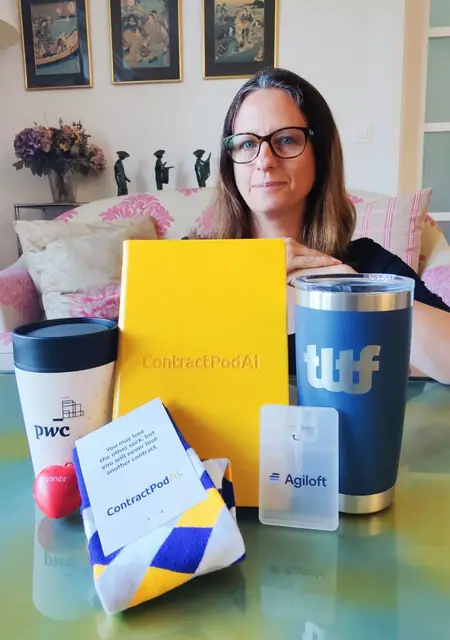
AktuellesPaula Reichenberg präsentiert Neur.on am Anlass von PwC und The LegalTech Fund in London
An einem Londoner Anlass auf Einladung präsentierte die CEO von Neur.on die Lösung vor Fachleuten der LegalTech. Sie kehrte mit drei unerwarteten «Preisen» zurück, darunter eine Erkenntnis: Die Nachfrage nach mehrsprachiger juristischer Übersetzung wächst.
Artikel lesen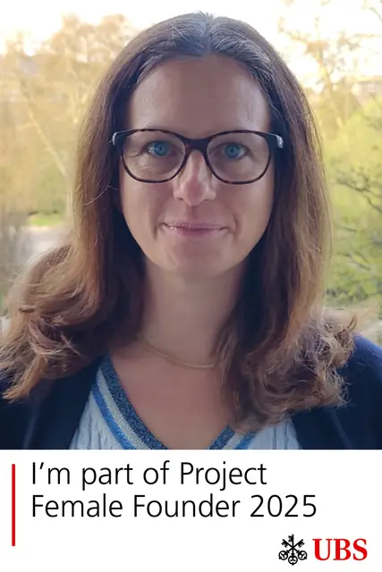
AktuellesPaula Reichenberg, CEO von Neur.on, ist Teil des Female Founder Project 2025 von UBS
Gründerinnen bekommen bei Finanzierungsrunden andere Fragen als Gründer. Paula Reichenberg, CEO von Neur.on, bereitet sich mit dem Programm von UBS darauf vor und hofft auf richtig knifflige Fragen.
Artikel lesen Aktuelles
AktuellesGeneva International Legal Week 2025: ein Panel über rentable KI mit Paula Reichenberg
Sind die Anfangskosten der KI nur «Lehrgeld»? Wer sein Budget im Griff hat, erwartet von der KI einen besseren Return on Investment. In Genf teilt ein Panel konkrete Tipps, wie sich KI rentabel einsetzen lässt.
Artikel lesen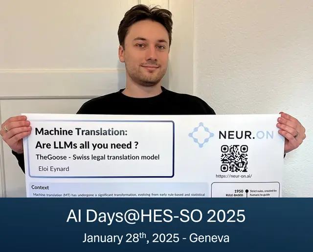
AktuellesNeur.on an den AI Days 2025 in Genf: wie man ein LLM zum guten Übersetzer trainiert
Was braucht es, damit ein LLM zu einem ausgezeichneten Übersetzer juristischer und finanzieller Texte wird? Eloi Eynard, Data Scientist bei Neur.on, stellt an den AI Days 2025 die Methoden des Teams vor und verrät, woher der Name «TheGoose» kommt.
Artikel lesen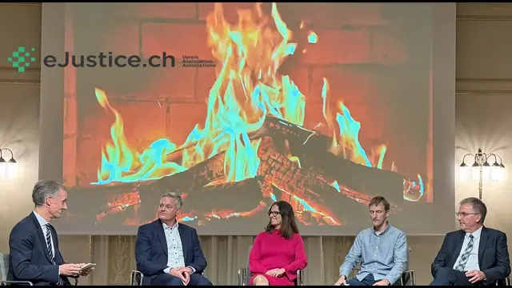
Aktuelles40 Jahre eJustice.ch: Die CEO von Neur.on diskutiert über das «Swiss Justice Base Model»
Der Verein eJustice.ch startet eine Reihe von Gesprächen im kleinen Kreis zwischen Recht und Technologie. Erwartete Themen beim ersten Treffen: KI-Souveränität, geistiges Eigentum, Datensicherheit und Rechtsphilosophie.
Artikel lesen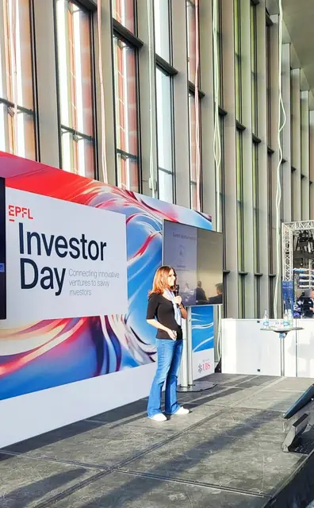
AktuellesPaula Reichenberg, CEO von Neur.on, pitcht am EPFL Investor Day 2024
Drei Minuten auf der Bühne und ein unerwarteter Rat aus der Masterclass: die Folie zum Team streichen. Paula Reichenberg setzte ihn noch am selben Nachmittag um, für einen entspannteren und hoffentlich überzeugenderen Pitch.
Artikel lesen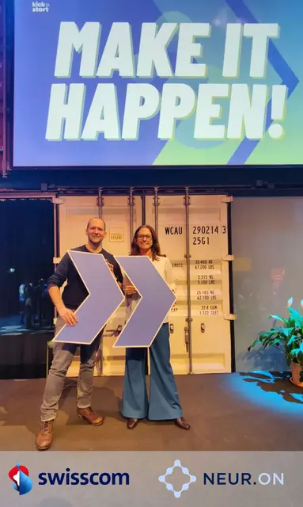
AktuellesNeur.on und Swisscom kündigen eine Zusammenarbeit für den Rechts- und Bankensektor an
Ein PoC soll Schweizer Banken und Anwaltskanzleien ein sicheres Toolkit für Übersetzung und Redaktion bieten, gehostet in der Schweiz. Neur.on gehört zu den ersten Unternehmen, die auf der neuen GPU-Infrastruktur von NVIDIA bei Swisscom arbeiten.
Artikel lesen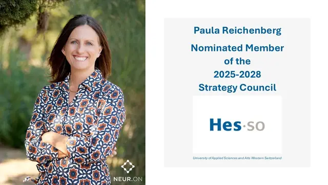
AktuellesPaula Reichenberg in den Strategischen Rat der HES-SO für 2025-2028 berufen
Bäume pflanzen, damit künftige Generationen die Früchte ernten: Paula Reichenberg wirkt in einem beratenden Gremium der HES-SO mit, an der Seite von Persönlichkeiten aus Wirtschaft, Gesundheit, Sozialem und Kultur.
Artikel lesen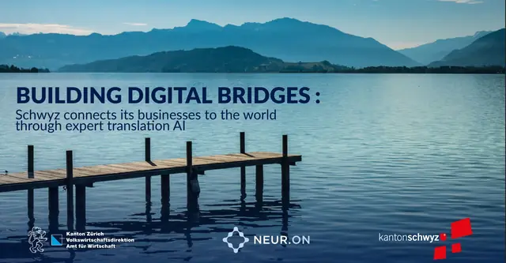
AktuellesHandelsregister Schwyz: Auszüge mit der KI von Neur.on ins Englische übersetzt
Jeden Monat baten Hunderte Personen das Handelsregister Schwyz um eine verlässliche englische Übersetzung eines Auszugs. Ein Rückblick auf ein Projekt aus der Innovation Sandbox des Kantons Zürich und auf die Tücken schweizerischer Rechtsbegriffe.
Artikel lesenNeur.on unter den 24 Start-ups des Startup Showcase am TLTF Summit 2024 in Miami
Hunderte Bewerbungen, 24 Einladungen: Neur.on präsentiert seine KI-Suite für juristische Übersetzung im Dezember vor Investorinnen und Investoren, Branchengrössen und LegalTech-Fachleuten, die nur auf Einladung teilnehmen.
Artikel lesen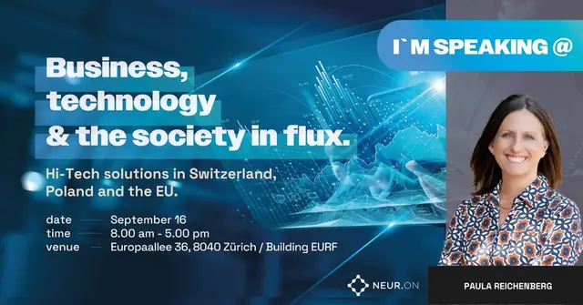
AktuellesKI und Anwaltskanzleien: Paula Reichenberg am Panel «AI in Business» 2024 in Zürich
Lohnen sich KI-Investitionen für Anwaltskanzleien und KMU? Vor dem Panel «AI in Business» in Zürich stellt Paula Reichenberg die Frage nach dem Return on Investment und nach Rezepten, die funktionieren.
Artikel lesen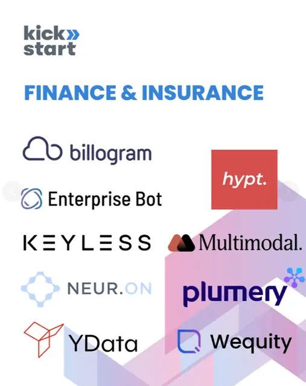
AktuellesNeur.on in der Kohorte 2024 von Kickstart Innovation, Vertikale Finance & Insurance
Über 310 Proofs of Concept und Geschäftsabschlüsse, über CHF 2,5 Milliarden Kapital, aufgenommen von den Alumni: Kickstart Innovation nimmt Neur.on in den Jahrgang 2024 auf, mit Partnern wie Swisscom, PostFinance, AXA und MSD.
Artikel lesen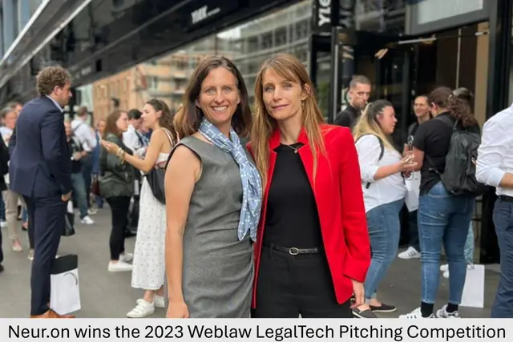
AktuellesPaula Reichenberg, CEO von Neur.on, in der Jury der Elevator Pitch Competition am Weblaw Forum 2024
Als Siegerin der letzten Ausgabe wechselt Neur.on auf die andere Seite des Tisches. Paula Reichenberg bewertet die Pitches nach den Kriterien für LegalTech-Investitionen von Julia Maltby. Drei davon stellen wir hier vor.
Artikel lesen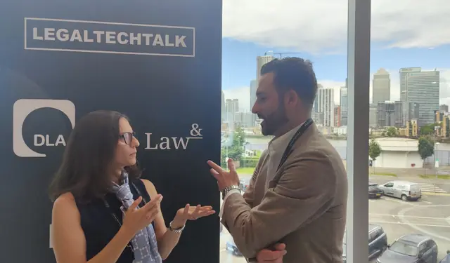
AktuellesDie wichtigsten Erkenntnisse der Konferenz LegalTechTalk 2024 in London
«Ich weigere mich, für Informationen zu bezahlen, die ich schon habe.» General Counsels und Anwaltskanzleien tauschten ihre Sicht auf Vertrauen, Effizienz und die Rolle der Technologie in der Rechtsberatung aus.
Artikel lesen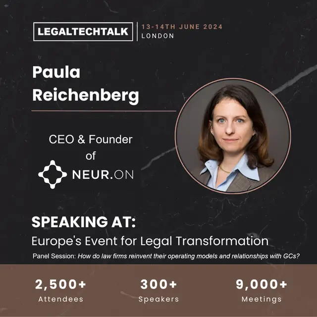
AktuellesLegalTechTalk 2024 in London: das Betriebsmodell von Anwaltskanzleien neu denken
Warum sollten Anwaltskanzleien ihr Modell ändern, und wie gehen sie dabei vor? James Lane, Line Lolk Thomsen und Jordan Lee berichten von ihren Erfahrungen in einem Panel, das Paula Reichenberg moderiert.
Artikel lesen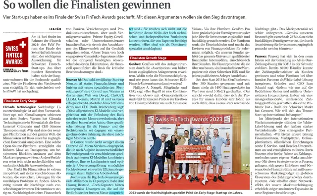
AktuellesNeur.on im Finale der Swiss FinTech Awards 2024 in der Kategorie Early Stage
Neur.on gegen ChatGPT oder Gemini, ein Kampf David gegen Goliath? Nicht wirklich. Das Bild vom Verbrennungsmotor und von individuell gebauten Raketen erklärt die Positionierung von Corrext, nachzulesen auch in Finanz und Wirtschaft.
Artikel lesen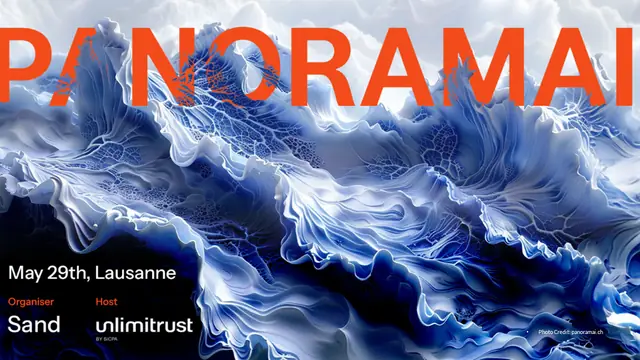
AktuellesNeur.on am GEN AI Summit 2024 in Lausanne: die Herausforderungen der KI in der juristischen Übersetzung
Warum tun sich Tools wie DeepL mit spezialisierten Rechts- und Finanztexten schwer? Am GEN AI Summit 2024 sprach die CEO von Neur.on über die Unterschiede zwischen Rechtssystemen, kulturelle Hürden und die Zukunft der KI in der Übersetzung.
Artikel lesen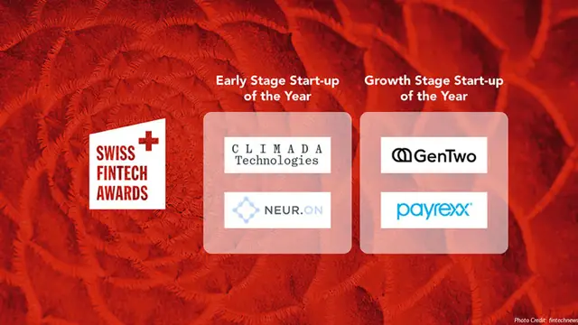
AktuellesNeur.on unter den 4 Finalisten der Swiss FinTech Awards 2024
Wie kann eine Übersetzungsplattform an einem FinTech-Wettbewerb teilnehmen? Für Banken ist präzise Sprache die Schatulle, in der sie ihre Expertise überreichen. Die Jury der Swiss FinTech Awards hat das verstanden.
Artikel lesen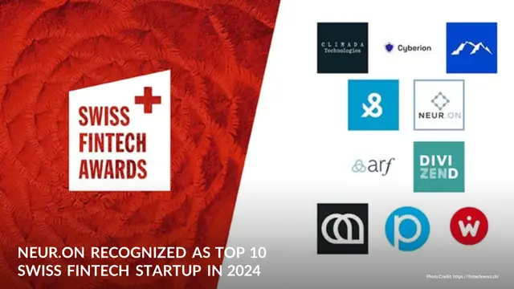
AktuellesNeur.on in den Top 10 der Schweizer Fintech-Start-ups der Swiss FinTech Awards 2024
Von 100 eingereichten Dossiers wählte ein Panel aus 20 Fachleuten fünf Start-ups pro Kategorie aus. Neur.on ist in der Kategorie Early Stage dabei. Dazu gehören ein Fintech-Workshop und die Swiss FinTech Awards Night.
Artikel lesenKI in der Rechtsbranche: Paula Reichenberg am Podium vom 17. April 2024 in Zürich
Auswirkungen, Chancen und Risiken der KI für das Recht: Paula Reichenberg, CEO von Neur.on und Vizepräsidentin der SLTA, diskutiert mit einem Professor der Universität Zürich, einem Anwalt von Homburger und einer Anwältin von CMS Switzerland.
Artikel lesen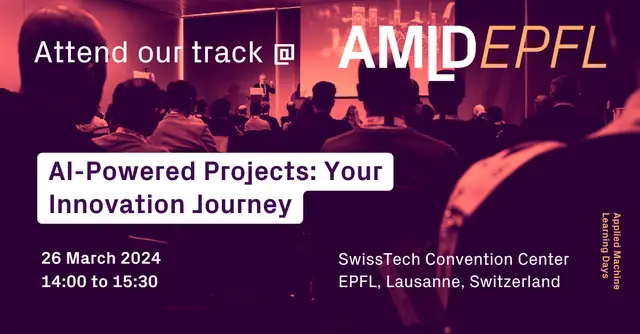
AktuellesNeur.on an den AMLD EPFL 2024, vom 23. bis 26. März im SwissTech Convention Center in Lausanne
Start-up, KMU oder Grosskonzern wie Swisscom: Wie sieht ein KI-Projekt je nach Unternehmensgrösse aus? Neur.on teilt seine Herausforderungen und seinen Optimismus in einer Session, die die Vizepräsidentschaft für Innovation der EPFL organisiert.
Artikel lesen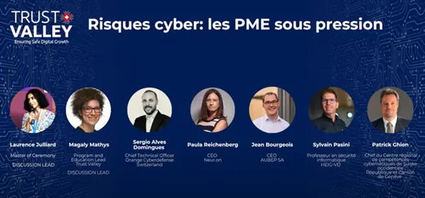
AktuellesTrust Valley Day 2023: Neur.on am Podium zu Cyberrisiken für KMU
IT-Dienstleister sind das Einfallstor zu grossen Organisationen und werden zu bevorzugten Zielen. Am Trust Valley Day plädierte die CEO von Neur.on für Infrastrukturen, mit denen Schweizer KMU KI sicher erproben können.
Artikel lesen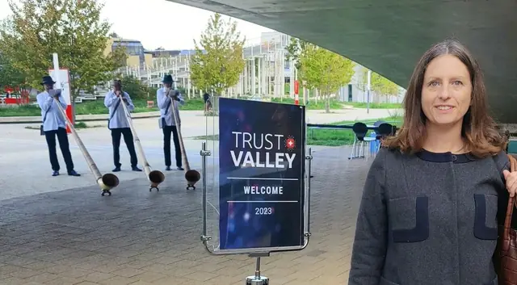
AktuellesTrust Valley 2023: Cybersicherheit und Datensouveränität, eine dauerhafte Schweizer Tradition?
Juristische Übersetzungsprojekte sind ein oft übersehenes schwaches Glied der Datensicherheit. Auf Einladung der Trust Valley teilt Neur.on die Erkenntnisse eines Panels über KMU und stellt die Frage nach einer Schweizer Sandbox für CHF 2,5 Millionen.
Artikel lesen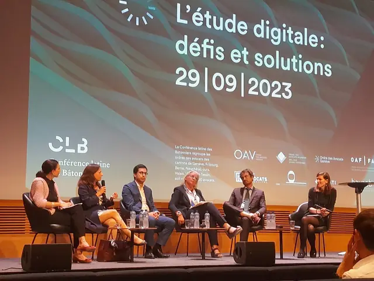
AktuellesLegalTech und Anwaltschaft: Verbündete oder Konkurrenz? Lehren aus der Tagung zur digitalen Kanzlei
Die meisten LegalTech-Tools wollen der Anwaltschaft dienen, nicht mit ihr konkurrieren. Trotzdem setzen sie sich nur schwer durch. Passend zu den Arbeitsabläufen, intuitiv bedienbar und mit reaktionsschnellem Kundendienst: drei Schlüssel zum Erfolg.
Artikel lesen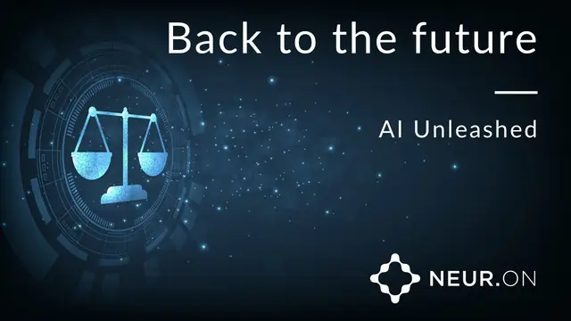
AktuellesKonferenz MIDS 2023 in Genf: Paula Reichenberg über die Einführung generativer KI
Über 200 Fachleute aus Anwaltschaft und Schiedsgerichtsbarkeit feierten 15 Jahre Master in International Dispute Settlement. Zusammen mit Professor Jacques de Werra verglich Paula Reichenberg die generative KI mit der maschinellen Übersetzung.
Artikel lesenKilian Marty verstärkt den Beirat von Neur.on als Experte für Cybersicherheit
Kilian Marty leitet die Abteilung Cybersicherheit von CertX AG. Mit dem Blick eines erfahrenen Auditors prüft er jeden Aspekt der Sicherheitsvorkehrungen von Neur.on, an der Seite von Jean Hennebert und Brian Firlit.
Artikel lesen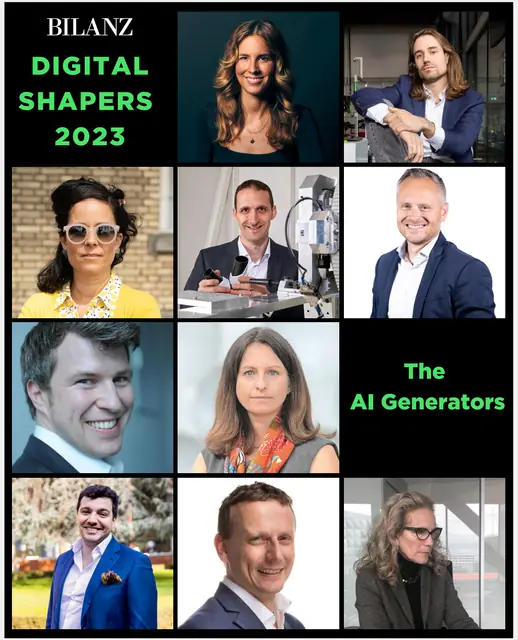
AktuellesPaula Reichenberg, CEO und Gründerin von Neur.on, von BILANZ zum «Digital Shaper 2023» ernannt
Eine Auszeichnung, die dem ganzen Team gehört. Neur.on nutzt die Gelegenheit, drei Überzeugungen zur Digitalisierung des Rechts in Erinnerung zu rufen: Technologie im Dienst der Anwaltschaft, Transparenz und menschliches Fachwissen.
Artikel lesen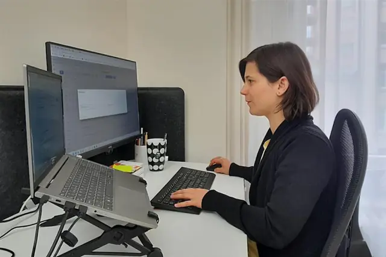
AktuellesAuf orientation.ch erzählt Orane Laeri, COO von Neur.on, von ihrem Weg in die Linguistik
Vom Übersetzungsstudium an der Universität Genf bis zur Leitung des operativen Geschäfts eines LegalTech-Start-ups: Orane Laeri erzählt von ihrem Werdegang. Für sie ersetzt die Maschine den Menschen nicht, sie macht die Arbeit interessanter.
Artikel lesenMüssen KI-Start-ups den AI Act fürchten? Die Lehren aus dem Grand Challenge
Acht KI-Lösungen auf dem Prüfstand des Entwurfs zum AI Act: Neur.on zieht drei Lehren daraus, darunter einen günstigen Hebel für die Compliance von Start-ups mit knappen Finanzen.
Artikel lesen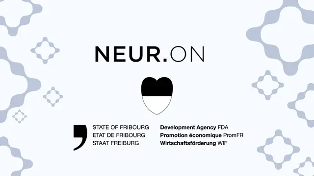
AktuellesDer Staat Freiburg verstärkt seine Unterstützung für Neur.on bei der juristischen KI-Übersetzung
Das Forschungsprojekt von Neur.on mit dem Institut iCoSys wird bereits von Innosuisse gefördert und erhält nun Unterstützung vom Staat Freiburg. Der Beitrag finanziert Forschung und Entwicklung, neue Anstellungen und die internationale Expansion.
Artikel lesen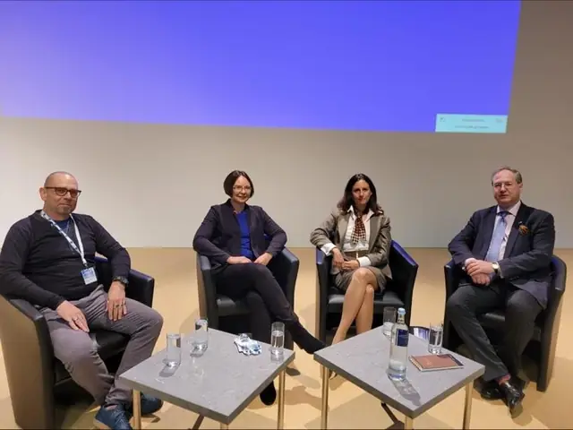
AktuellesBDÜ-Konferenz 2022: Paula Reichenberg über die Zusammenarbeit von Anwaltschaft und Übersetzenden
Gute Übersetzungen entstehen aus offener Kommunikation zwischen Anwaltschaft und Übersetzenden. Ein Rückblick auf ein Podium an der Konferenz des BDÜ und auf die Erwartungen beider Seiten an die maschinelle Übersetzung.
Artikel lesenIn dieser Kategorie gibt es noch keine Artikel.
Neue Artikel und Neuigkeiten, sobald sie erscheinen
Neur.on veröffentlicht Artikel, Vorträge und Neuigkeiten auf LinkedIn. Folgen Sie der Seite, um nichts zu verpassen.
Diese Themen zeigen sich am besten an Ihren Dokumenten
Eine Demo mit einer Fachperson für Schweizer Recht: Terminologie, Lektoratsstufen, Vertraulichkeitsmodi, mit Ihren eigenen Dateien.
Individuelle Demo · auf Deutsch, Französisch, Italienisch oder Englisch · Hosting zu 100 % in der Schweiz